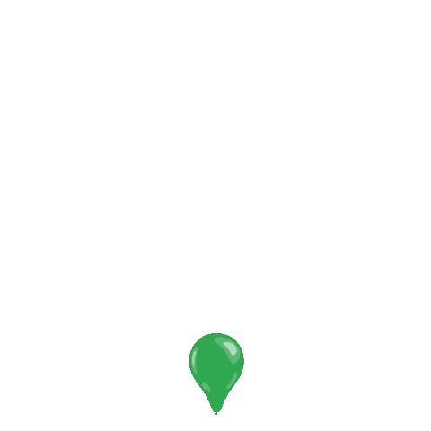

<ion-content>
  <div
    id="mapLoading"
    style="text-align: center; font: 18px Roboto, Arial, sans-serif"
  >
    
    tracking the bus...
  </div>
  <div #googleMapContainer id="map" style="display: none"></div>
</ion-content>
